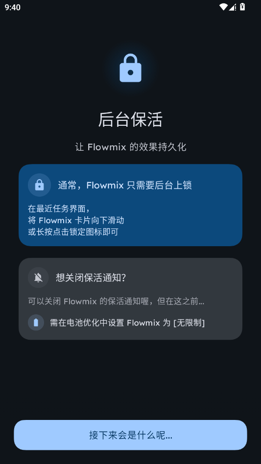
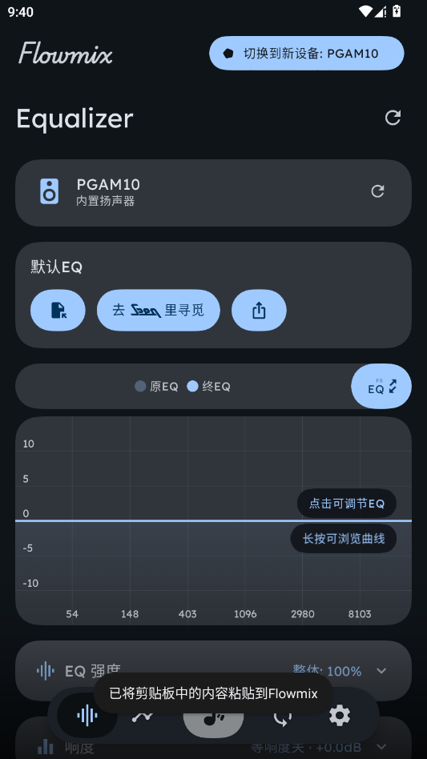

Flowmix 避坑：用了一个月才发现这几个地方在默默搞砸你的声音
Flowmix 看着简单，几个调节器拉一拉就能调音，但真正用起来才发现后台被杀、削波失真、Q 值太尖这些坑踩中一个就能把辛辛苦苦调的 EQ 废掉。这篇把我踩过的四个实打实的坑和解法一次说清。
我第一次接触 Flowmix 是去年换了副降噪耳机之后——耳机本身的频响曲线在高频有个明显的峰，听久了耳朵疼。朋友推荐我装个全局 EQ，说 Flowmix 能自动拟合耳机频响、拉 PEQ 控制点、还限幅器防削波。我想这不就是个"带 UI 的音频处理插件"嘛，能有多难？
结果一个月之内我踩了四个坑，每个都让我一度以为 Flowmix 坏了要重装。现在整理出来——如果你也在用 Flowmix，或者正打算上，官方下载拿一份试试，看完这篇至少能省下我那四次翻文档、搜 FAQ、甚至差点卸载重装的时间。

坑一：切出去回个微信，EQ 悄悄失效了
症状：明明在 Flowmix 里开了 EQ 配置，选好耳机、拟合完频响，点启动——一切正常。然后切出去刷了两分钟小红书或者回了条微信，再切回来就发现 EQ 自己关了，声音又变回裸耳机的样子。
原因：这个锅 Flowmix 不背，是 Android 的省电机制在作怪。系统判断一个 App "没有活跃交互"的时候会主动回收后台进程省电量。Flowmix 作为全局 EQ，需要持续运行音频处理链（EQ → 响度 → MBC → 限幅器），一旦进程被杀，整条处理链就断了。很多人以为是 Flowmix 本身不稳定，其实是没给够保活权限。
解法：去 flowmix文档 翻了一下才弄明白，这套保活配置写得挺清楚——四招按顺序走完基本能解决 95% 的问题。但我踩的坑是——第一招就给漏了。Flowmix 需要显示一条持久通知（不是推送消息，是常驻状态栏的那种），系统把有持久通知的 App 视为"前台服务"，优先级会大幅提升。我当时嫌状态栏图标太丑，把通知权限关了，结果 Flowmix 基本活不过切回桌面三次。
正确的四步法：
- 开通知权限（别关，常驻状态栏那条不能少）
- 允许自启动（小米用户注意：小米的自启动开关偶尔会反向生效——如果开了还是被杀，试试关掉）
- 系统设置里把 Flowmix 设为电池优化「不受限制」
- 最近任务界面把 Flowmix 卡片锁定
如果以上都做了还是偶尔被杀，Flowmix 还有个"增强保活"的无障碍权限方案——但这个我建议当最后手段用，毕竟无障碍是个敏感权限，能不碰就不碰。
坑二：EQ 增益拉爽了，一开限幅器就听到破音
症状：FlowEq 拟合给了几个 +6dB 的 PEQ 点，我嫌低频还是不够劲，又手动加了两个 +3dB 的增益，响度拉了 +5dB，等响补偿开到 3——一点启动按钮，"咔嚓"一声，高频直接削波了，像音箱喇叭被拍扁了一样。
原因：数字音频有个物理上限叫 0 dBFS，超过就被"硬切掉"，产生非常刺耳的失真。EQ 增益、响度、MBC 压缩、等响补偿这几个功能叠加起来很容易让某些频段的瞬时电平顶到 0 dBFS 甚至更上。我当时根本不知道限幅器是干嘛的，以为是个"锦上添花"的东西，直接跳过了。
解法：限幅器本质上是个超高压缩比的压缩器（∞:1）——超过阈值的信号完全不允许再往上冲，相当于在整条处理链的最末端加了一道"不超过 0 dBFS"的硬保险。
设置建议别太激进：阈值 -0.3 dBFS（几乎不影响，只拦极端峰值），释放时间 200ms。如果还是听到削波，把阈值降到 -1 dBFS 留更大余量；如果觉得限幅器在"抢戏"（比如重低音之后音量突然掉下来），把释放时间调到 500ms 让它反应慢一点。
一个常见误区：限幅器不是"开了就万事大吉"——如果 PEQ 增益加得太离谱（比如某个点 +10dB 以上），限幅器会疯狂工作，听感上会觉得声音被压扁了不自然。所以先管好增益幅度，再靠限幅器兜底。
坑三：Q 值拉到 10 调音，结果高频出了金属感
症状：PEQ 可视化调节器里，我在高频找到一个扎耳朵的峰，想精准削掉它——把 Q 值拉到 10，增益减了 4dB，结果那个峰确实没了，但听什么都带一种"金属味"，像隔着一层铁皮听歌。
原因：PEQ 的 Q 值决定了滤波器影响的频率范围有多宽。Q 值大 = 只影响一个很窄的频段（"尖"），Q 值小 = 影响很宽的频段（"缓"）。我当时以为 Q 值越大越精准，结果拉到 10 之后，滤波器太窄了，只对极窄的几个 Hz 生效，但那些窄带的相位响应会产生不自然的谐波，听起来就是金属感。
解法：除非你在削一个非常尖的、确定只有几十 Hz 宽的峰，否则 Q 值别超过 4。平时微调 PEQ 的时候，0.5~2 之间最舒服——既能调到想听的位置，又不会产生奇怪的谐波畸变。
还有个配套技巧：相邻两个 PEQ 控制点尽量错开一个倍频程以上。我之前在 3kHz 和 3.2kHz 各加了一个 PEQ，以为能"叠加出更明显的效果"，结果两个靠得太近的滤波器互相干扰，产生了一种很闷的"浑浊感"——后来把一个挪到 4kHz 就正常了。

坑四：频响拟合效果不对，换数据源才发现数据差了一条街
症状：FlowEq 自动拟合完，低频量明显偏少，跟我实际听感完全相反。我手动加了几个低频 PEQ 才拉回来，还以为是自己的耳机听感偏差。后来偶然在另一个数据源搜到同型号耳机，拟合曲线一下就对了——原来我第一次拟合用的数据源测量本身就不准。
原因：Flowmix 接了四个社区数据源——ReaLab、HuiHiFi、Woodenears、HangoutAudio，每个的测量环境、设备、人员都不同。同一款耳机，不同数据源测出来的频响曲线可能差得挺多，特别是入耳式耳机，佩戴深度差 1mm 就能让低频差好几个 dB。
我第一次拟合用的是 Woodenears 里的一条单样本测量，低频部分本身就偏低。换了 ReaLab 的测量之后（ReaLab 是消声室环境，业内公认数据质量最高），拟合曲线一下就贴合我的实际听感了。
解法：数据源选择按优先级来——ReaLab 先用，不满意或找不到再换 HuiHiFi，再不行才试 Woodenears 和 HangoutAudio。搜索框支持模糊匹配，搜不到完整型号的时候试试只搜数字部分（比如 "XM5" 而不是 "Sony WH-1000XM5"），或者搜同系列类似型号。
如果四个数据源都没有你的耳机型号——别慌，手动调 PEQ 或者用 Int 向导也行，实在不行还能导入 AutoEq 的 .txt 配置文件。
防坑清单
最后整理成速查清单，下次开 Flowmix 之前扫一眼就行：
- 通知权限必须开，常驻状态栏那条别嫌丑关了，关了 90% 概率被系统杀掉
- 有 +3dB 以上增益就开限幅器，阈值从 -0.3 dBFS 保守起步
- PEQ 的 Q 值别超 4，0.5~2 最自然，相邻控制点错开一个倍频程以上
- 频响拟合先试 ReaLab，不满意换 HuiHiFi，同型号数据不对大概率是数据源的问题
- 重启手机后记得手动激活一次，Flowmix 默认不会自动恢复音频控制
说实话，踩完这些坑回头看，Flowmix 本身没什么大问题——它把复杂的音频处理链拆成了可视化的调节器，FlowEq 一键拟合也很省心。真正让声音变糟的，大多是用户（比如我）对"全局 EQ 需要持续保活"和"数字音频有物理上限"这两件事没概念。知道这些坑之后，Flowmix 其实相当省心。
写到这里顺手说一句：这套资料我同步维护了多份备份，GitHub、Gitee、GitCode 三个仓库各存了一份，国内访问和多源备份都方便。